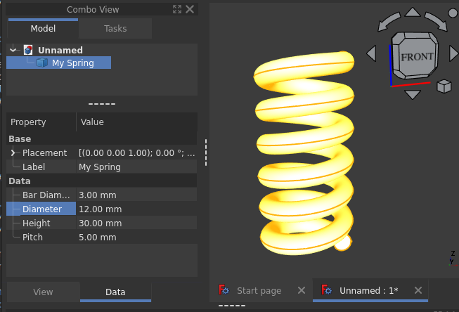
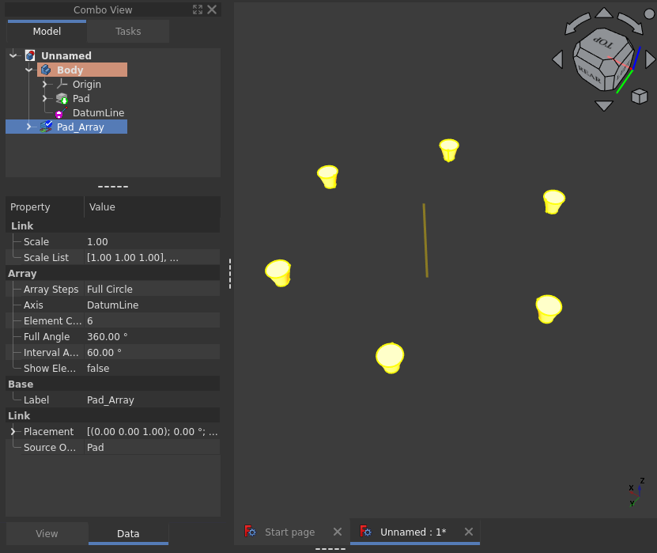
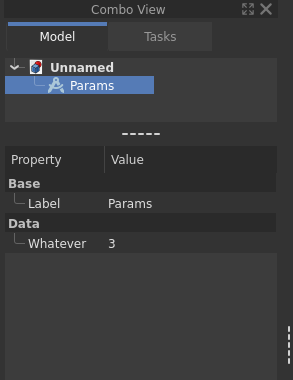
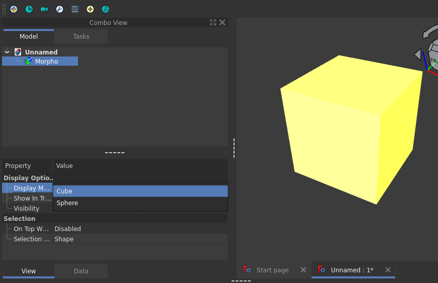

FreeCAD Scripted Objects Modern API
| META | VALUE |
|---|---|
| generated | 2024-11-10 10:29:15.358804 |
| author | Frank David Martínez Muñoz |
| copyright | (c) 2024 Frank David Martínez Muñoz. |
| license | LGPL 2.1 |
| version | 1.0.0-beta2 |
| min_python | 3.8 |
| min_freecad | 0.21 |
TABLE OF CONTENTS
Preliminaries
Disclaimer
All of the following information is the result of my own research and usage of the FreeCAD's Python APIs along several years. It reflects my very own view, coding style and limited understanding of FreeCAD internals. All the content is based on official docs, forum discussions, development of my own extensions, reading code of existing extensions and FreeCAD sources.
This document does not cover 100% of the API yet because there are still some obscure methods that can be overridden from the Python Proxies but there is no enough documentation of them, I have never used them or I have not found usage examples. My goal is to cover all of the supported features but it will take time.
Audience
This is a technical document for developers of FreeCAD extensions commonly known as Feature Python Objects or more generally Scripted Objects.
General programming experience, some basic FreeCAD know-how and a minimalistic comprehension of Python are sufficient, as long as you can search the internet for a basic grasp of classes, functions, decorators, type hints, etc...;)
It is also expected that the readers are FreeCAD users, and have a good understanding of the basic usage of it.
Goals
The API must be developer friendly, consistent, maintainable and compatible with FC 0.21+
The API must be an overlay on top of the existing API, so no conflicts with existing code.
The API must be 100% documented.
Old code and new code can be mixed, so existing projects can be upgraded gradually if desired.
Include a tiny documentation generator to produce compact, nice and readable documentation of this API for developers.
Non Goals
It is not intended to replace anything in the existing FreeCAD APIs.
It is not intended to require any refactoring of existing python code.
It is not intended to require any refactoring of existing C/C++ code.
The documentation generator script is not for general use.
Features
Declarative DataProxy (@proxy)
Observable explicit and well defined lifecycle
Serialization/Deserialization
Automatic Proxy-Object association
Declarative extensions
Extension lifecycle management
Properties
Declarative creation (Property*)
Proxy based read/write
Observable
Declarative ViewProxy (@view_proxy)
Display Modes
Declarative creation (DisplayMode)
Builder based creation of display modes
Drag and Drop support
Migrations (@migrations)
Declarative support
Redirect to different class
Automatic version management
upgrade/downgrade/redirect
Extensions
Declarative Extension support
Preferences
Proxy based read/write
Declarative listeners (@Preference.subscribe)
Automatic type handling
Documentation in markdown format.
General Scripted Object Architecture
Despite the widespread use of the name FeaturePythonObject, this is a
concept and not a specific class in the Python API. Maybe a better name should
be ScriptedObject. Every ScriptedObject has two main components: The Data
component and the View component. Each main component is also divided in two
parts: the FreeCAD object and the python Proxy object. All these 4 pieces
conforms the ScriptedObject concept. It is more clear in the following diagram:
Scripted Object Overview diagram

Important
So to develop your own ScriptedObject, you need to create at least one class
for the DataProxy and optionally an additional class for
the ViewProxy.
Note
View component is optional and only required for GUI part of the object.
App::DocumentObject
Document objects are classes that define the data, geometry and logic of the
features in the document. These classes are internal FreeCAD C++ classes and
are instantiated from python using document.addObject(...)
See: https://wiki.freecad.org/Scripted_objects
App::FeaturePython and Part::FeaturePython are the most common DocumentObject
classes used to create custom objects in FreeCAD, but there are many more types
supported:
| Object type | Description |
|---|---|
App::DocumentObjectGroupPython | |
App::FeaturePython | Typical Scripted Object |
App::GeometryPython | |
App::LinkElementPython | |
App::LinkGroupPython | |
App::LinkPython | |
App::MaterialObjectPython | |
App::PlacementPython | |
Fem::ConstraintPython | |
Fem::FeaturePython | |
Fem::FemAnalysisPython | |
Fem::FemMeshObjectPython | |
Fem::FemResultObjectPython | |
Fem::FemSolverObjectPython | |
Mesh::FeaturePython | |
Part::CustomFeaturePython | |
Part::FeaturePython | Typical Scripted object with Shape |
Part::Part2DObjectPython | |
PartDesign::FeatureAddSubPython | Additive/Subtractive PD Shape |
PartDesign::FeatureAdditivePython | Additive PD Shape |
PartDesign::FeaturePython | Base PD Feature |
PartDesign::FeatureSubtractivePython | Subtractive PD Shape |
PartDesign::SubShapeBinderPython | |
Path::FeatureAreaPython | |
Path::FeatureAreaViewPython | |
Path::FeatureCompoundPython | |
Path::FeaturePython | |
Path::FeatureShapePython | |
Points::FeaturePython | |
Sketcher::SketchObjectPython | |
Spreadsheet::SheetPython | |
TechDraw::DrawComplexSectionPython | |
TechDraw::DrawLeaderLinePython | |
TechDraw::DrawPagePython | |
TechDraw::DrawRichAnnoPython | |
TechDraw::DrawTemplatePython | |
TechDraw::DrawTilePython | |
TechDraw::DrawTileWeldPython | |
TechDraw::DrawViewPartPython | |
TechDraw::DrawViewPython | |
TechDraw::DrawViewSectionPython | |
TechDraw::DrawViewSymbolPython | |
TechDraw::DrawWeldSymbolPython |
Wiki Source: https://wiki.freecad.org/Scripted_objects#Available_object_types
Forum Source: https://forum.freecad.org/viewtopic.php?t=86414&start=10#p752318
Note
There is an official class diagram, but it does not include scriptable objects
apart from App::FeaturePython. See https://wiki.freecad.org/File:FreeCAD_core_objects.svg
Gui::ViewProvider
ViewProvidersare classes that define the way objects will look like in the tree view and the 3D view, and how they will interact with certain graphical actions such as selection.
Source: https://wiki.freecad.org/Viewprovider
DataProxy
This is a python class responsible for managing all the data logic of your
ScriptedObject, it creates the data properties and executes the required
code on document recompute. We will see the details later.
This class is also responsible for serializing/deserializing its own internal state from/to the document.
To define a DataProxy class, just define a class and decorate it with
@proxy decorator.
x1from fpo import proxy, PropertyLength, print_log2
3()4class MyCustomObjectProxy:5 length = PropertyLength(default=5)6
7 def on_execute(self, obj):8 print_log("length=", self.length)9 ...10
11# -- usage12obj = MyCustomObjectProxy.create(name="MyThing")The name of the class is irrelevant, but using Proxy as suffix looks like a good naming convention.
ViewProxy
This is a python class responsible for managing all the presentation logic of your
ScriptedObject, it creates the presentation properties and executes the required code to
display the ScriptedObject in the Tree and in the 3D scene. We will see the details later.
This class is also responsible for serializing/deserializing is own internal state from/to the document.
To define a ViewProxy class just define a class and annotate it with
@view_proxy decorator.
71from fpo import view_proxy, DisplayMode2
3(icon='self:my-icon.svg')4class MyCustomObjectViewProxy:5 wireframe = DisplayMode(name='Wireframe')6 shaded = DisplayMode(name='Shaded', is_default=True)7
The name of the class is irrelevant, but using ViewProxy as suffix looks like a good naming convention.
To bind the Proxy and the ViewProxy together, you specify the ViewProxy as
an argument of the @proxy decorator.
121from fpo import proxy, view_proxy2
3()4class MyCustomViewProxy:5 ...6
7(view_proxy=MyCustomViewProxy) # <-- associate DataProxy with ViewProxy8class MyCustomObjectProxy:9 ...10
11# -----12obj = MyCustomObjectProxy.create(name="MyThing")Object creation and binding
Once the classes are defined, you can create your objects using the create static method.
11def create(name: str = None, label: str = None, doc: Document = None)The create method takes care of adding the DocumentObject to the Document and binding
the proxies, view providers, etc...
| Argument | Type | Description |
|---|---|---|
| name | str | Internal name of the object |
| label | str | Label of the object used in UI. |
| doc | Document | Document, if omitted, current document will be used, if there is not current document, a new one will be created. |
Example:
11obj = MyCustomObjectProxy.create(name="MyThing")DataProxy Lifecycle
Every DataProxy object has a lifecycle. You can observe state changes
using the appropriate event listeners to add your custom logic.
All possible states
| State | Description |
|---|---|
| NonExistent | (virtual) the object does not exists |
| Creating | (hidden) proxy instance exists but it is not initialized |
| Created | Proxy is created, properties and extensions are initialized |
| Active | Everything is initialized and the object is in consistent state. Objects and Proxies are bound together |
| Serialized | (virtual) the object is passivated in the FCStd file. |
| Restoring | (hidden) restoring everything from FCStd file. |
| Restored | Object is fully restored and migrations are applied if any |
| Removed | (virtual) object was removed from the document |
| Attaching | (virtual) FreeCAD is creating and binding the objects |
| Migrating | (virtual) Migration code is running |
Note
Virtual states are pure conceptual, they are not present in the code but helps
to understand the lifecycle.
Hidden states are not observable (there are no event handlers for them)
The following diagram shows the complete lifecycle:
Lifecycle diagram

State event listeners
To listen to a specific state change event, you create an event handler for that specific event. That is a simple method in your class with the correct signature. All listeners are of course optional.
Using state change listeners you can inject any custom logic in the right place.
Example:
211from fpo import proxy2
3()4class MyCustomObjectProxy:5
6 def on_create(self, fpo):7 print("My Object was created")8
9 def on_attach(self, fpo):10 print("My Object was attached to the document")11
12 def on_start(self, fpo):13 print("My Object is ready")14
15 def on_remove(self, fpo):16 print("My Object was removed")17
18 def on_restore(self, fpo):19 print("My Object was loaded from the file")20
21 ...on_attach
11def on_attach(self: Proxy, fpo: DocumentObject) -> NoneCalled when the proxy is just bound to the DocumentObject and attached to the Document.
on_create
11def on_create(self: Proxy, fpo: DocumentObject) -> NoneCalled when the object is created and after all properties are created and all migrations are applied.
on_start
11def on_start(self: Proxy, fpo: DocumentObject) -> NoneCalled after the object is created the first time or after restored from the document. Usually any custom initialization logic must be done here.
on_remove
11def on_remove(self: Proxy, fpo: DocumentObject) -> NoneCalled before the object is removed from the Document
on_restore
11def on_restore(self: Proxy, fpo: DocumentObject) -> NoneCalled when the object is restored from the FCStd file
Persistence events listeners
FreeCAD is responsible for managing the persistence of the DocumentObjects and
ViewProviders but your Proxy classes are responsible for persisting/loading
its own internal state from/to the document.
on_serialize
11def on_serialize(self: Proxy, state: Dict[str, Any]) -> NoneThis method is called to collect data from your object and store it in the document, all that you have to do is include your state into the state dictionary.
161from fpo import proxy2
3()4class MyCustomObjectProxy:5 var1: str6 var2: int7
8 def __init__(self, fp):9 self.var1 = 'Hello'10 self.var2 = 511
12 def on_serialize(self, state: Dict[str. Any]):13 state['my_value_1'] = self.var114 state['my_value_1'] = self.var215
16 ...on_deserialize
11def on_deserialize(self: Proxy, state: Dict[str, Any]) -> NoneThis method is called to give you data from the document, all that you have to do is read the values from the state dict.
121from fpo import proxy2
3()4class MyCustomObjectProxy:5 var1: str6 var2: int7
8 def on_deserialize(self, state: Dict[str, Any]):9 self.var1 = state.get('my_value_1', '')10 self.var2 = state.get('my_value_2', 0)11
12 ...Active event handlers
When your ScriptedObject is Active, all your work is performed in on_execute
and on_change event listeners.
on_execute
11def on_execute(self: Proxy, fpo: DocumentObject) -> NoneThis method is where you place the main scripting code of your ScriptedObject,
this is called on document recompute if the object is marked as dirty (changed).
171from fpo import proxy, PropertyLength2import Part3
4(object_type='Part::FeaturePython')5class CustomBoxProxy:6 width = PropertyLength(default=5.0, description='Width of the box')7 length = PropertyLength(default=5.0, description='Length of the box')8 height = PropertyLength(default=5.0, description='Height of the box')9
10 def on_execute(self, fpo):11 # Your magic happens here12 fpo.Shape = Part.makeBox(self.length, self.width, self.height)13
14 ...15
16# -----17obj = CustomBoxProxy.create(name='box1')on_change
21def on_change(self: Proxy, fpo: DocumentObject,2 prop_name: str, new_value: Any, old_value: Any) -> NoneCalled after any property has changed.
on_before_change
21def on_before_change(self: Proxy, fpo: DocumentObject,2 prop_name: str, old_value: Any) -> NoneCalled when a property change will be performed.
Direct property change listeners
You can listen to changes on specific properties using the @{prop}.observer decorator:
141(object_type='Part::FeaturePython')2class CustomBoxProxy:3 width = PropertyFloat(default=5.0, description='Width of the box')4 length = PropertyFloat(default=5.0, description='Length of the box')5 height = PropertyFloat(default=5.0, description='Height of the box')6
7 # Your magic happens here8 def on_execute(self, fpo):9 fpo.Shape = Part.makeBox(self.length, self.width, self.height)10
11 .observer12 def length_changed(self, fp, new_value, old_value):13 print(f"Hey! length has changed from {old_Value} to {new_value}")14
Other listeners
on_extension
11def on_extension(self: Proxy, fpo: DocumentObject, extension: str) -> NoneCalled when an extension is added to the object. Extensions add predefined
behaviors to the DocumentObject, making it behave like a group, link,
attachable, etc... see: extensions
Hooks
More optional methods called by FreeCAD to get some info from the Proxy
can_link_properties
11def can_link_properties(self) -> boolReturn true to cause PropertyView to show linked object's property
is_dirty
11def is_dirty(self) -> boolReturn True if your DataProxy in a state that requires recompute
Properties
The main interaction between your ScriptedObject and the user is by managing property
values, the user sets the property values and you do something useful with that.
Properties are declared using special property constructors, there is one constructor per property type.
For a reference of all property types, check the official docs:
Declaring properties
Each property can be declared with a proxy attribute.
For example, to create an Integer property:
91()2class MyMagicProxy:3 my_property = PropertyInteger(section="Basic", default=5)4
5 # Optional listener6 .observer7 def my_property_obs(self, fp, new_value, old_value):8 print(f"my_property has changed from {old_value} to {new_value}")9
Property constructors
101def Property{__property_type__}(2 name: str = None,3 section: str = 'Data',4 default: Any = None,5 description: str = '',6 mode: PropertyMode = PropertyMode.Default,7 observer_func: Callable = None,8 link_property: str = None,9 enum: Enum = None,10 options: Callable[[], List[str]] = None)| argument | description |
|---|---|
| name | Name of the property, deduced from the attribute if missing |
| section | Sub section in the property editor |
| default | Default value of the property |
| description | Tooltip text |
| mode | A combination of PropertyMode flags |
| enum | Only valid for PropertyEnumeration. The enum type. |
| options | Only valid for PropertyOptions. A function that returns the list of options |
| link_property | Key of the Link property (see extensions) App::LinkExtensionPython |
| observer_func | Function to listen for property changes. You can also use the observer decorator. |
Examples
71from fpo import PropertyInteger, PropertyLength, PropertyAngle, proxy2
3()4class MyProxy:5 x = PropertyInteger(default=5)6 y = PropertyLength(default=0)7 w = PropertyAngle(default=30)Property modes
On property declaration, you can specify a mode or a combination of them. Supported modes are the following:
| Mode | Description |
|---|---|
PropertyMode.Default | No special property type |
PropertyMode.ReadOnly | Property is read-only in the editor |
PropertyMode.Transient | Property won't be saved to file |
PropertyMode.Hidden | Property won't appear in the editor |
PropertyMode.Output | Modified property doesn't touch its parent container |
PropertyMode.NoRecompute | Modified property doesn't touch its container for recompute |
PropertyMode.NoPersist | Property won't be saved to file at all |
Property Editor modes
Editor modes for properties are different than actual property modes and are transient:
| Mode | Description |
|---|---|
PropertyEditorMode.Default | read/write access in the editor |
PropertyEditorMode.ReadOnly | Property is read-only in the editor |
PropertyEditorMode.Hidden | Property won't appear in the editor |
Property change listener
Any function can be subscribed to the property to listen for change events. The arguments of the property listener are all optional
181()2class MyMagicProxy3 my_prop1 = PropertyInteger(section="Basic", default=5)4 my_prop2 = PropertyInteger(section="Basic", default=5)5 my_prop3 = PropertyInteger(section="Basic", default=5)6
7 .observer8 def listener1(self, fp, new_value, old_value):9 print(f"my_property1 has changed from {old_value} to {new_value}")10
11 .observer12 def listener2(self, fp, new_value):13 print(f"my_property2 has changed {new_value}")14
15 .observer16 def listener3(self, fp):17 print(f"my_property3 has changed")18
Important
Only one observer (listener) method can be attached to each property.
Property access
All properties can be accessed from the Proxy object using the declared
property name. It is internally proxyfied to the actual DocumentObject.
121()2class MyMagicProxy3 my_property1 = PropertyInteger(section="Basic", default=5)4
5 def on_execute(self, fp):6
7 # Transparently access the property from the remote object8 x = self.my_property19
10 # Transparently update the property from the remote object11 self.my_property1 = 1012
Note
Properties are only proxies of the actual properties in the internal FreeCAD
object (DocumentObject). So persistence is managed by FreeCAD. additional state of your
proxy object must be serialized/deserialized by you in
on_serialize / on_deserialize listeners.
Creating properties programmatically
It is also possible to create properties programmatically using the direct API, but in that case you manage them directly from the object.
151()2class MyMagicProxy3
4 def on_start(self, fp):5 if not hasattr(fp, 'Length'):6 fp.addProperty(7 "App::PropertyLength",8 "Length", "Box", "Length of the box").Length = 1.09
10 def on_execute(self, fp):11 # read12 x = fp.Length13 # write14 fp.Length = 1015
ViewProxy listeners
ViewProxy has a lightly lifecycle compared to DataProxy but has a lot of
listeners and methods to interface with FreeCAD GUI.
on_attach
11def on_attach(self, vp: ViewObject) -> NoneCalled when the ViewObject is attached to the Document. Usually init logic is here.
on_start
11def on_start(self, vp: ViewObject) -> NoneCalled when the ViewObject is attached to the Document and all declared properties
are created and all declared Display Modes are created.
on_edit_start
11def on_edit_start(self, vp: ViewObject, mode: EditMode = EditMode.Default) -> NoneCalled when the user request edit. See edit modes
on_edit_end
11def on_edit_end(self, vp: ViewObject, mode: EditMode = EditMode.Default) -> NoneCalled when the user terminates editing. See edit modes
on_dbl_click
11def on_dbl_click(self, vp: ViewObject) -> boolCalled when the user double clicks the Tree Node. Return True to tell the core system that you handled the action already.
on_context_menu
11def on_context_menu(self, vp: ViewObject, menu: QMenu) -> NoneCalled to populate the context menu. You can add actions to the menu object:
41
2def on_context_menu(self, vp, menu):3 menu.addAction(...)4
on_delete
11def on_delete(self, vp: ViewObject, sub_elements) -> NoneCalled when the ViewObject is deleted. Usually to re-expose the child nodes.
on_claim_children
11def on_claim_children(self) -> List[DocumentObject]Returns a list of Document Objects that need to be shown as child nodes of
this ScriptedObject.
on_drag_object
11def on_drag_object(self, vp: ViewObject, obj: DocumentObject) -> NoneCalled if the obj was allowed to be dragged. You perform the drag logic here.
on_drop_object
11def on_drop_object(self, vp: ViewObject, obj: DocumentObject) -> NoneCalled if the dropped obj was accepted. You perform the drop logic here.
on_object_change
11def on_object_change(self, fp: DocumentObject, prop_name: str) -> NoneCalled when a property changes on the associated DocumentObject (Not the ViewObject).
ViewProxy hooks
can_drag_objects
11def can_drag_objects(self) -> boolReturns True if this VP accepts dragging of sub-elements
can_drop_objects
11def can_drop_objects(self) -> boolReturns True if this VP accepts dropping of sub-elements
can_drag_object
11def can_drag_object(self, obj: DocumentObject) -> boolReturns True if this VP accepts dragging of the dragged obj
can_drop_object
11def can_drop_object(self, obj: DocumentObject) -> boolReturns True if this VP accepts dropping of the incoming obj
icon
11def icon(self) -> strReturns the path of the icon (Tree Node Icon).
If the returned value is prefixed with 'self:' the path will be resolved
relatively to the file where the class is declared.
Edit Modes
| Mode | Description |
|---|---|
| Default(0) | The object will be edited using the mode defined internally to be the most appropriate for the object type |
| Transform(1) | The object will have its placement editable with the Std TransformManip command |
| Cutting(2) | This edit mode is implemented as available but currently does not seem to be used by any object |
| Color(3) | The object will have the color of its individual faces editable with the Part FaceColors command |
Main Decorators
There are two entry points for the API, the DataProxy and the
ViewProxy. Both of them are created decorating a class with the
corresponding decorators @proxy and @view_proxy respectively.
@proxy
71(2 object_type: str = 'App::FeaturePython',3 subtype: str = None,4 view_proxy: ViewProxy = None,5 extensions: Iterable[str] = None,6 view_provider_name_override: str = None,7 version: int = 1)Converts a user defined class into a full blown DataProxy with all of the
lifecycle management, versioning, proxyfied properties, extensions, etc...
| Argument | Description |
|---|---|
| object_type * | One of the supported Python feature types. This will be used to create the FC Object using addObject(...). by default it is App::FeaturePython |
| subtype | The handler name of your ScriptedObject, by default it is the name of your class. Saved as Proxy.Type |
| view_proxy | A reference to the view proxy class |
| extensions * | A list of extensions to be added to the ScriptedObject |
| version | Current version of the class. (Used by migrations) |
| view_provider_name_override | Forced ViewProvider name |
@view_proxy
Converts a user defined class into a full blown ViewProxy with all of the
lifecycle management, proxyfied properties, extensions, display mode builders,
etc...
41(2 view_provider_name_override: str = None,3 extensions: Iterable[str] = None,4 icon: str = None)| Argument | Description |
|---|---|
| view_provider_name_override | ViewProvider internal type name, empty by default so FreeCAD will decide the value |
| icon | Path of the icon for the Tree. If prefixed with 'self:' the path is relative to the file where the class is declared. i.e. 'self:my_icon.svg' will be resolved in the same folder as the file that declares your class. |
| extensions * | A list of extensions to be added to the VP |
Display Modes
Display modes are named zones in the 3D view that have specific presentation attributes. So objects placed in each zone are rendered with the zone's attributes.
Display modes are implemented by FreeCAD using coin objects, usually SoGroup or
SoSeparator. Each display mode has a name, an optional method builder that builds
the coin object and optionally can be marked as default mode.
Function: DisplayMode
Signature / DisplayMode
11def DisplayMode(name: str=None, is_default: bool=False, builder: Callable=None): ...Docs / DisplayMode
| Argument | Type | Description |
|---|---|---|
| name | str | Name of the display mode |
| is_default | bool | Configure the DM as default, defaults to False |
| builder | Callable[[ViewObject], coin.SoGroup] | Method to build the coin object if required |
Declarator of Display Modes, allows to configure a mode and optionally a builder method to create and register the coin object.
Example:
91()2class MyViewProxy:3 wireframe_plus = DisplayMode(name="WireframePlus", is_default=True)4 shaded = DisplayMode(name="Shaded")5
6 .builder7 def wireframe_plus_builder(self, vp):8 return SoSeparator()9
Extensions
Extensions are predefined behaviors that can be added to the DocumentObject or
ViewObject to add functionality.
Available Object Extensions
App::GeoFeatureGroupExtensionPython
App::GroupExtensionPython
App::LinkBaseExtensionPython
App::LinkExtensionPython (ref)
App::OriginGroupExtensionPython
App::SuppressibleExtensionPython
Part::AttachExtensionPython
TechDraw::CosmeticExtensionPython
Available View extensions
Gui::ViewProviderSuppressibleExtensionPython
Gui::ViewProviderExtensionPython
Gui::ViewProviderGeoFeatureGroupExtensionPython
Gui::ViewProviderGroupExtensionPython
Gui::ViewProviderOriginGroupExtensionPython
PartGui::ViewProviderAttachExtensionPython
PartGui::ViewProviderSplineExtensionPython
Migrations
Migrating old versions of your ScriptedObject to maintain backwards compatibility with
old files is a complex topic. You can read all the low level details in this
extensive official wiki: https://wiki.freecad.org/Scripted_objects_migration
In this API, migrations are way more simple as you only have to add the migrations decorator and implement the corresponding methods
Migrations using the same DataProxy Class
211
2()3(version=2)4class FpoClass:5
6 def on_migrate_complete(self, version, obj):7 # Called after all migrations are applied8
9 def on_migrate_upgrade(self, version, fp):10 # Called if version is less than current version11 # Do any required migration code here12
13 def on_migrate_downgrade(self, version, fp):14 # Called if version is greater than current version15 # Do any required migration code here16
17 def on_migrate_error(self, version, fp):18 # Called if migration fails19
20 ...21
Migrations using a different DataProxy class
Some times you refactor your code and move the file that declares your
DataProxy class, in this scenario FreeCAD fails to find your class as its
old module is persisted in the FCStd file. In this situation you need to do
a redirection from the old file to the new one.
Suppose that your old DataProxy was defined as a class named OriginalFpo in a file
named original.py and you decided to move it to a file named better.py and
renamed your class to BetterFpo. You need to redirect calls from the old
file/class to the new one, and also apply some migration logic to convert the
old version into the new version.
In your new file better.py you have your new class, nothing special is
required there.
101# file: better.py2
3()4class BetterFpoViewProvider:5 # ....6
7(view_provider=BetterFpoViewProvider)8class BetterFpo:9 # All the new stuff10
Now you have to redirect old calls from the old file to the new one. So just create a class with the old name but make it into a migration, the migration will take care of calling your logic and redirecting to the new class after it.
151# file: original.py2
3from fpo import migrations, proxy4from better import BetterFpo, BetterFpoViewProvider5
6(current=BetterFpo)7()8class OriginalFpo:9
10 def on_migrate_class(self, version, fp):11 # Perform any migration logic here ....12
13 # Then rebind to the new class14 BetterFpo.rebind(fp) # Reinitialize fp as the new Fpo15
@migrations decorator
Function: migrations
Signature / migrations
11def migrations(current: type=None): ...Docs / migrations
| Argument | Type | Description |
|---|---|---|
| current | ProxyClass | most recent class, if omitted, the same class is used. |
Install migrations management into the class.
Example:
41()2(version=5)3class MyScriptedObjectClass:4 ...FreeCAD Preferences
You can read and write FreeCAD preferences from your code using a simple API. Use it to save/load configurations.
In FreeCAD, preferences are saved in a Tree of groups/entries like this:
71.2└── User parameter:BaseApp/3└── MyExtension/4└── My Group/5├── My Param X = 0.56├── My Param Y = 107└── My Param Z = 100
Every Group is under a root parent, in the example above the root is
BaseAppEvery Entry is under a Group, in the example above the group is
MyExtension/My GroupEvery Entry has one value of type int, float, str, bool
To access them for read/write, you just need to create a proxy for the preference:
321
2#------3# file: preferences.py4# Declare preferences wherever you want,5# but usually in some `preferences.py` module6# so you can reuse from everywhere.7from fpo import Preference8config_x = Preference(group="MyExtension/My Group", name="My Param X", default=10)9config_y = Preference(group="MyExtension/My Group", name="My Param Y", default=10)10config_z = Preference(group="MyExtension/My Group", name="My Param Z", default=10)11
12#------13# file: whatever.py14import preferences as pref15
16# read values17print(f"X = {pref.config_x()}")18print(f"Y = {pref.config_y()}")19print(f"Z = {pref.config_z()}")20
21# write values22pref.config_x(150)23pref.config_y(100)24pref.config_z(210)25
26# subscribe/observe to changes in preferences with listeners27from fpo import Preference28
29.subscribe(group="MyExtension/My Group")30def on_preference_change(group, value_type, name, value):31 print(f"Preference changed: {group}, {value_type}, {name}, {value}")32
Preferences API
Preference
11Preference(group:str, name:str, default:Any=None, value_type:type=str, root:str="BaseApp")| Argument | Description |
|---|---|
| group | Group path |
| name | Entry name |
| default | Default value returned if Entry does not exists |
| value_type | Type of the value, if not provided, type(default) is used, if no default. str is used |
| root | Tree root, default is BaseApp |
@Preference.subscribe
11.subscribe(group:str, root="BaseApp")Creates and attach a preference listener, you can observe changes in a group.
| Argument | Description |
|---|---|
| group | Group path to observe |
| root | Tree root, default is BaseApp |
101from fpo import Preference2
3.subscribe(group="MyExtension/My Group")4def on_preference_change(group, value_type, name, value):5 print(f"Preference changed: {group}, {value_type}, {name}, {value}")6
7
8# You can remove the observer subscription later:9on_preference_change.unsubscribe()10
Utility functions reference
There are also few global functions that are frequently used in
ScriptedObject development. So I included them here for quick reference because
they are used in the examples.
Global functions in fpo module
Function: get_selection
Signature / get_selection
11def get_selection(*args) -> Tuple: ...Docs / get_selection
| Return type | Description |
|---|---|
| List[DocumentObject] | If no arguments are supplied, the list of selected objects |
| bool, *List[DocumentObject] | If arguments are supplied, the first element returned says if the selection matches the patterns, the rest are the selected objects in order |
| Argument | Type | Description |
|---|---|---|
| *args | *[str|re.Pattern] | List of patterns |
Returns current selection in specific order and matching specific types.
case 1: no args, just returns selection as list:
11sel = get_selection()case 2: args are the required selection types:
31ok, axis, obj = get_selection('PartDesign::Line'. '*')2if ok:3 ...regex are supported for type matching and '*' is a general wildcard:
31ok, axis, part, other = get_selection('PartDesign::Line', re.compile('Part::.*'), '*')2if ok:3 ...this will parse selection for three elements, first one must be a
PartDesign::Line, second one must be any object from the Part namespace,
the last one can be anything. The user can select them
in any order but they will be returned in the specified order. Take
into account that wildcards will match anything so it is better to
specify patterns from more specific to least specific.
In this invocation schema, the first element of the returned tuple is a boolean that indicate if the selection matches the patterns.
Function: set_immutable_prop
Signature / set_immutable_prop
11def set_immutable_prop(obj: ObjectRef, name: str, value: Any) -> None: ...Docs / set_immutable_prop
| Argument | Type | Description |
|---|---|---|
| obj | ObjectRef | remote FreeCAD object |
| name | str | property |
| value | Any | the value |
Force update a property with Immutable status. It temporarily removes the immutable flag, sets the value and restore the flag if required.
Function: message_box
Signature / message_box
11def message_box(message: str, title: str='Message', details: str=None): ...Docs / message_box
| Argument | Type | Description |
|---|---|---|
| message | str | summary |
| title | str | box title, defaults to "Message" |
| details | str | expandable text, defaults to None |
Shows a basic message dialog (modal) if App.GuiUp is True, else prints to
the console.
Function: confirm_box
Signature / confirm_box
11def confirm_box(message: str, title: str='Message', details: str=None) -> bool: ...Docs / confirm_box
| Return type | Description |
|---|---|
| bool | True if user accepts |
| Argument | Type | Description |
|---|---|---|
| message | str | summary |
| title | str | box title, defaults to "Message" |
| details | str | expandable text, defaults to None |
Ask for a confirmation with a basic dialog. Requires App.GuiUp == True
Function: print_log
Signature / print_log
11def print_log(*args): ...Docs / print_log
Print into the FreeCAD console with info level.
Function: print_err
Signature / print_err
11def print_err(*args): ...Docs / print_err
Print into the FreeCAD console with error level.
Function: get_pd_active_body
Signature / get_pd_active_body
11def get_pd_active_body(): ...Docs / get_pd_active_body
| Return type | Description |
|---|---|
| PartDesign.Body | Active Body |
Retrieve the active PartDesign Body if any
Function: set_pd_shape
Signature / set_pd_shape
11def set_pd_shape(fp: DocumentObject, shape: Shape) -> None: ...Docs / set_pd_shape
Prepare the shape for usage in PartDesign and sets Shape and AddSubShape
Compatibility notes
Serialization and deserialization
State serialization process used to be managed by methods named
__getstate__ / __setstate__ in older versions of FreeCAD but they
were renamed to dumps / loads in recent versions due to conflicts
with python 3.11+.
This backwards compatibility issue is transparently managed by this API, but it also was fixed in master recently:
Official documentation sources:
https://wiki.freecad.org/Create_a_FeaturePython_object_part_I
https://wiki.freecad.org/Create_a_FeaturePython_object_part_II
Code examples
There are some basic examples in the examples folder. The examples are numbered in order to imply increasing complexity, I do not repeat comments that were already present in previous examples.
| script | Description | Image |
|---|---|---|
| ex1_basic.py | example with one property |  |
| ex2_cube.py | part example with one Shape |  |
| ex3_spring.py | part example with one Shape |  |
| ex4_attachable.py | part example with one attachable Shape |  |
| ex5_link.py | Object with Link behavior |  |
| ex6_link_array.py | Object with Link array behavior |  |
| ex7_icon.py | Using a ViewProxy to setup the icon |  |
| ex8_display_modes.py | Using a ViewProxy to setup display modes |  |
| ex9_migrations.py | Basic migration | |
| ex10_part_design.py | Object compatible with PartDesign |  |
| ex11_undo_redo.py | Transactional undo/redo aware code | |
| ex12_group.py, ex13_docgroup.py | Group behavior |  |
Quick setup
The only required file to use this API is fpo.py, the key point is where to put it
as it is not a FreeCAD core thing by now.
Usage from a Workbench
Put fpo.py in your Workbench folder and use it. It is supposed that this API
is used for Workbench developers so no other special configuration is required
for that case.
As fpo.py is not part of the core FreeCAD distribution, it is possible that other
Workbenches already include the file. So it is a good precaution to rename your
copy or put it in your internal module.
Remember that the recommended layout for workbenches is to put the code into a module of the freecad package.
111.2└── FreeCAD Config Dir/3└── Mod/4└── YourWorkbench/5└── freecad/6└── your_module/7├── __init__.py8├── init_gui.py9├── fpo.py10├── your_amazing_thing.py11└── ...
Usage from Macros
It is better to not define your proxy classes directly in Macros because FreeCAD will have have a hard time finding them when reloading the objects from saved documents.
What you can do in this case is putting the fpo.py file directly in the FreeCAD's
Macros directory, then create your proxy classes in its own file in
Macros dir, then import them from your macros. That way FreeCAD will
find the Proxies next time you open your Documents.
Quick and dirty setup
Another easy way if you don't want to develop a Workbench is to fake one,
To do that simply create a folder inside FreeCAD's Mod directory and put fpo.py
and your other python files there. This will make fpo and your modules visible
and importable from to FreeCAD.
Examples setup
Copy fpo.py and examples/* (the files, not the directory) into FreeCAD's
Macro dir. then you can run the examples from the FreeCAD's python console:
71import ex3_spring as ex32ex3.create_spring()3
4import ex10_part_design as ex105ex10.create_cube_pd()6
7...Important
Copy fpo.py in only one place to avoid name conflicts.